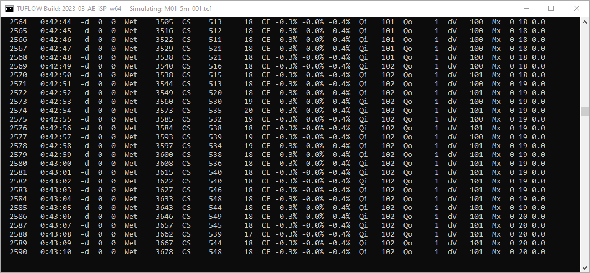
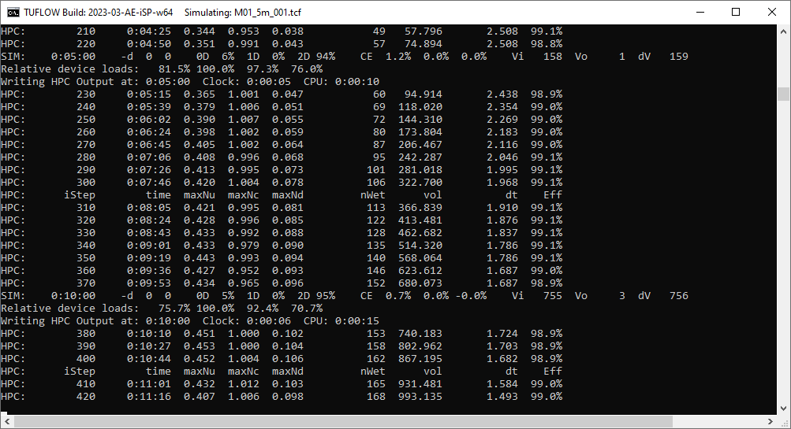
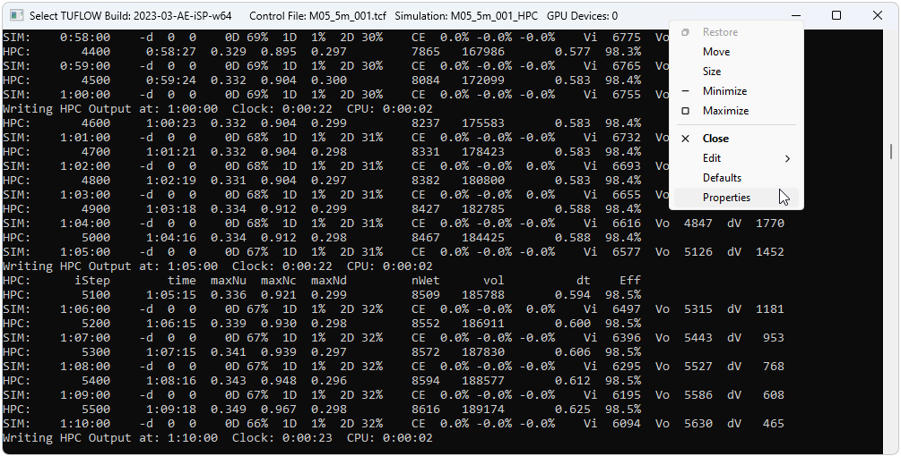
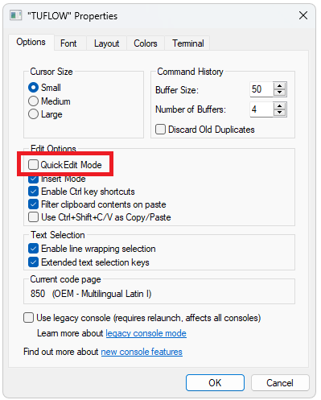
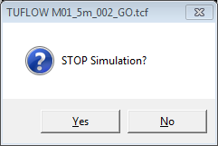
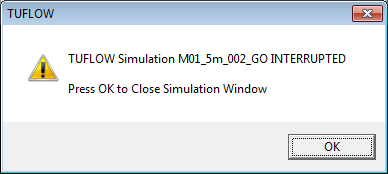
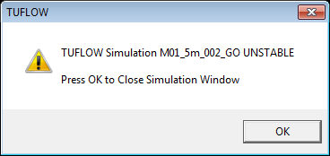
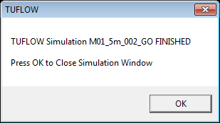
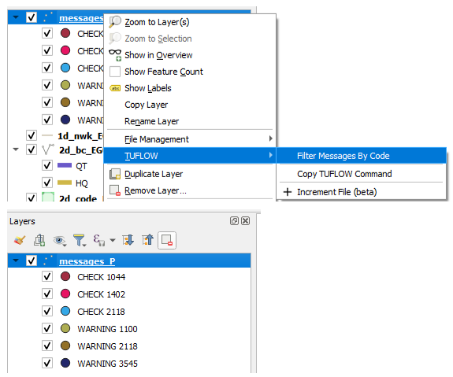

| Flag (Space 1) | Flag (Space 2) | Description |
|---|---|---|
* |
The depth at a node fell below -0.1m. A WARNING is also output to the _messages GIS layer (see Section 14.4.5). The occurrence of significant negative depths may cause mass conservation errors in the 1D domain. |
|
* |
One end of a normal channel is close to being dry and a transitioning algorithm was used to dry/wet the channel. |
|
# |
The gradient channel algorithm was applied. This occurs when one end of the channel is either dry or very shallow. The gradient channel algorithm applies a weir equation at the dry or shallow end in combination with the momentum equation by adjusting the water surface slope along the channel. |
|
Culvert Flow Regime Flags |
For culvert channels, flow regime flags are defined separately in Table 5.6 (see Important 14.1). |
|
A |
Adverse flow (i.e. flow gradient is against the slope of the channel). |
|
D |
Upstream controlled friction flow occurred in a Steep (S) channel when the downstream end was dry. |
|
E |
The channel or node is empty or dry (i.e. the head or water level is at the bottom of the node). E stands for Empty. |
|
F |
The head exceeds the top of the nodes elevation versus surface area table (NA table ). F stands for Full. The head at the mid-point of the channel exceeds the top of the channel’s hydraulics properties table (CS table). F stands for Full. |
|
G |
No flow through the structure. |
|
L |
The velocity rate limit was applied to the channel to try and prevent oscillations or instabilities - non-inertial channels (structures) only. See Vel Rate Limit. |
|
N |
Upstream controlled friction flow occurred in a Steep (S) channel with a Froude Number less than 0.5. N stands for normal flow, however, in this case the upstream controlled friction flow approach was adopted. This may occur during the transitioning of flow from downstream controlled to upstream controlled. If it occurs repetitively, the configuration of the channel should be reviewed. |
|
O |
For a Dam Failure type channel, the overtopping dam crest before dam failure. For a Arch Bridge or BB bridge type channel, the orifice flow. |
|
R |
Reverse flow (i.e. flow in the opposite direction to the channel’s digitised direction). |
|
S |
Upstream controlled friction flow occurred in a Steep (S) channel with a Froude Number greater than one (1). |
|
T |
Upstream controlled friction flow occurred in a Steep (S) channel with a Froude Number between 0.5 and one (1). T stands for Transitioning from normal flow to upstream controlled friction flow. |
|
U |
The uni-directional flag assigned to the channel was invoked and the velocity/flow was set to zero. |
|
W |
For a Sluice Gate type channel, the flow is not in contact with the sluice gate and the channel has reverted to Weir or Rectangular channel flow as outlined in Section 5.9.5. |
14 Checks and Log Files
This chapter of the Manual describes the check, log and quality control outputs from TUFLOW. This encompasses the following outputs:
- The Console Window (Section 14.1);
- Message boxes (Section 14.2);
- Local and Global .log (Section 14.3);
- Simulation log files (e.g. .tlf, hpc.tlf, .tsf) (Section 14.4);
- 1D Output File (.eof) (Section 14.5);
- Check Files (Section 14.6); and
- Mass Balance Outputs (Section 14.7).
Viewing and processing of results are described in Chapter 15.
14.1 Console Window Display
TUFLOW outputs a lot of information to the console during the data input and simulations stages. However, this typically processes so quick, that it may be difficult to read on your terminal or terminal window. The log file (.tlf) (Section 14.4) and check files (Section 14.6) contains this information in much more usable formats, most of which is geo-referenced GIS layers. However, should you wish, you can look back through the output buffer to establish where in the input data process the problem occurs.
After a model has completed initialising its input data and has started its computations, the simulation status is displayed. The default display frequency for TUFLOW Classic is every timestep and for TUFLOW HPC on GPU is every 100 timesteps. To change the frequency of display, the Screen/Log Display Interval command can be used. Where different timesteps are used for different domains, the display interval is based on the largest timestep. The console window contains a lot of useful information to keep an eye on your simulations as they progress. Whilst it isn’t expected to continuously watch the simulations standard output, it is useful to glance at occasionally to check that your simulations are “happy”.
If a Console window does not appear on Windows, or if TUFLOW terminates immediately after starting, there could be a few reasons why, this is discussed on the TUFLOW Wiki TUFLOW Crashing page.
If you are running from a script in a windowed environment and a window briefly appears, then disappears straight away, you can force the window to stay open so you can diagnose the issue. This is discussed in Section 14.1.3.
14.1.1 TUFLOW Classic
Once the hydraulic calculations commence, TUFLOW Classic output will be written to standard output and may appear as something similar to the console window shown below:

The following information is shown along each line in order of occurrence.
- Number of timesteps completed, based on the largest timestep of all 1D and 2D domains.
- Simulation time in hhhh:mm:ss.
- “-d” followed by two numbers:
- The maximum number of 1D nodes per timestep that experienced negative depths below ‑0.1m since the previous display line.
- The maximum number of 2D cell sides per timestep that experienced negative depths below ‑0.1m since the previous display line. The locations of these negative depths are output as warnings in the _messages layer (see Section 14.4.5). Negative depths indicate the model is having difficulty in convergence at that location, which may lead to an instability. See also Section 16.2.2.
- “Wet” followed by number of wet or active 2D cells.
- If automatic weir switching is active (see Free Overfall) the next information is “CS” (CellSides) followed by two numbers as follows:
- The number of cell sides where upstream controlled friction flow occurred (see Supercritical).
- The number of cell sides where upstream controlled broad-crested weir flow occurred (see Free Overfall).
- If the free-overfall algorithm is set to ON WITHOUT WEIRS (see Free Overfall), the next information is “FO” followed by the number of cell sides where the free-overfall algorithm is being applied. Note: this option is now rarely used in lieu of the automatic weir and supercritical flow options.
- If Display Water Level was specified, the next piece of information is a “GL” (Gauge Level) followed by the water level at the location indicated. This is useful to monitor the rise and fall of the water level at a key location.
- If Mass Balance Output is set to ON, “CE” (Cumulative Error) followed by three percentages is displayed to show the cumulative mass error as follows:
- The whole of model % cumulative mass error for all 1D and 2D domains.
- The % cumulative mass error for all 1D domains.
- The % cumulative mass error for all 2D domains.
- If Mass Balance Output is set to ON the following are displayed after the “CE” percentages:
- “Qi” followed by the total flow into the model (all domains) in m\(^3\)/s (or ft\(^3\)/s if using Units == US Customary). If the inflow exceeds 999999m\(^3\)/s or falls below -99999m\(^3\)/s, the flow is expressed in units of 1,000m\(^3\)/s and a single quote symbol is displayed after the number. A double quote symbol indicates the flow is expressed in units of 1,000,000m\(^3\)/s.
- “Qo” followed by the total flow out of the model (all domains) in m\(^3\)/s (or ft\(^3\)/s if using Units == US Customary). If the outflow exceeds 999999m\(^3\)/s or falls below -99999m\(^3\)/s, the flow is expressed in units of 1,000m\(^3\)/s and a single quote symbol is displayed after the number. A double quote symbol indicates the flow is expressed in units of 1,000,000m\(^3\)/s.
- “dV” followed by the change in volume in m\(^3\) (or ft\(^3\) if using Units == US Customary) of the model (all domains) since the last display time. If the change in volume exceeds 999999m\(^3\) or falls below -99999m\(^3\), the amount is expressed in units of 1,000m\(^3\) (mL) and a single quote symbol is displayed after the number. A double quote symbol indicates the change in volume is expressed in units of 1,000,000m\(^3\).
- If maximums are being tracked (i.e. Maximums and Minimums is set to ON or ON MAXIMUMS ONLY), additional information will be displayed to the Console Window and .tlf file for each Screen/Log Display Interval. Three numbers are displayed after “Mx” at the end of each line. The first two numbers are the percentage of 1D nodes and percentage of 2D cells that reached a new maximum in the last computational timestep. The third number is the time in decimal hours since no new maximum was recorded anywhere within the model. For example, “Mx 10 21 0.0” indicates that 10% of 1D nodes and 21% of 2D cells recorded a new maximum last timestep, and the time since the last recorded maximum is zero. Once all 1D nodes and 2D cells have reached their maximums the third (time) value will increase above zero.
The negative depth numbers, cumulative error percentages, inflow, outflow and change in volume figures are very useful to gauge the health of the model. Frequent negative depths, poor cumulative error (>1%, noting that some models will show a high mass error at the start, which can be acceptable provided it diminishes quickly) and “bouncy” inflow, outflow and change in volume values are all indicators of an unhealthy model. For further discussion see Section 16.1.
Whenever the map output is written (see Start Map Output and Map Output Interval), a line “Writing Output at:” is displayed, followed by the simulation clock time and CPU time. If the CPU time is significantly lower than the clock time, then either the simulation was paused for a period of time (see Section 14.1.4), the CPU is overloaded or the CPU is not being fully utilised (having Hyper Threading switched on can cause this to occur).
14.1.2 TUFLOW HPC
Once the hydraulic calculations commence, TUFLOW HPC output will be written to standard output and may appear as something similar to the console window shown below:

For lines starting with “HPC:” the following information is shown along each line in order of occurrence.
- Number of timesteps completed, based on the largest timestep of all 1D and 2D domains.
- Simulation time in hhhh:mm:ss.
- Timestep Control Numbers:
- Nu: Courant Number.
- Nc: Shallow Wave Celerity Number.
- Nd: Diffusion Number.
- Number of wet cells.
- Volume.
- Computed timestep.
- The timestep efficiency.
If the model contains virtual pipe networks, the following additional information is shown:
- qInlet: flow extracted from the 2D domain.
- qSurcharge: flow surcharging out of inlets, due to the outlet flow being limited.
- qOutput: flow entering the 2D domain.
For lines starting with “SIM:”, which occur at regular simulation time increments, additional statistics are output:
- Simulation time in hhhh:mm:ss.
- “-d” followed by two numbers:
- The maximum number of 1D nodes per timestep that experienced negative depths below ‑0.1m since the previous display line.
- The maximum number of 2D cell sides per timestep that experienced negative depths below ‑0.1m since the previous display line.
- Three compute percentage values:
- 0D % time spent on pre/post processing and CPU/GPU communication overhead.
- 1D % time spent on 1D compute.
- 2D % time spent on 2D compute.
- “CE” (Cumulative Error) followed by three percentages is displayed to show the cumulative mass error as follows:
- The whole of model % cumulative mass error for all 1D and 2D domains.
- The % cumulative mass error for all 1D domains.
- The % cumulative mass error for all 2D domains.
- Model volumes:
- “Vi” followed by the total volume of water into the model in m\(^3\)/s (or ft\(^3\)/s if using Units == US Customary). If the volume in exceeds 999999m\(^3\) or falls below -99999m\(^3\), the amount is expressed in units of 1,000m\(^3\) (mL) and a single quote symbol is displayed after the number. A double quote symbol indicates the change in volume is expressed in units of 1,000,000m\(^3\).
- “Vo” followed by the total volume of water out of the model (all domains) in m\(^3\)/s (or ft\(^3\)/s if using Units == US Customary). If the volume out exceeds 999999m\(^3\) or falls below -99999m\(^3\), the amount is expressed in units of 1,000m\(^3\) (mL) and a single quote symbol is displayed after the number. A double quote symbol indicates the change in volume is expressed in units of 1,000,000m\(^3\).
- “dV” followed by the change in volume in m\(^3\) (or ft\(^3\) if using Units == US Customary)of the model (all domains) since the last display time. If the change in volume exceeds 999999m\(^3\) or falls below -99999m\(^3\), the amount is expressed in units of 1,000m\(^3\) (mL) and a single quote symbol is displayed after the number. A double quote symbol indicates the change in volume is expressed in units of 1,000,000m\(^3\).
14.1.3 The Console Window Does Not Appear
If you are running from a batch file on Windows and the window briefly appears, then disappears straight away, you can force the window to stay open so you can diagnose the issue.
To do this, insert “pause” at the end of the batch file and remove any Start “TUFLOW”, -b and/or -t switch. For example:
C:\TUFLOW\Releases\2023-03-AF\TUFLOW_iSP_w64.exe MR_H99_C25_Q100.tcf
PauseUsing this simple batch file will start the simulation in the main batch window and give you greater control. Adding “Pause” at the end of the batch will keep the window open.
In most Linux workflows, the above isn’t a concern but where it is, the read command can be used to wait for user input, with options appropriate to your specific environment.
Common troubleshoot tips can be found here.
14.1.4 Unexpected Simulation Pause (Console Window Quick Edit Mode)
Windows 10 and onwards includes a Quick Edit mode option in the console window that can artificially pause TUFLOW simulations. The Quick edit mode is initiated if the cursor clicks somewhere on the console window while a TUFLOW simulation is running. Quick Edit mode can be deactivated to avoid this issue.
Right click the console window header. Select “Properties”.

Figure 14.3 Uncheck “Quick Edit Mode”. This will turn it off for the current session.

Figure 14.4 Update the default console window properties so this becomes the default mode. Right click the console window header. Select “Defaults”.
Uncheck “Quick Edit Mode”, just like in the “Properties” dialog box. This will turn Quick Edit Mode off for all future sessions.
14.1.5 Stopping the Console Window
It is possible to stop a simulation by using Ctrl+C. When pressed the first time (with the TUFLOW console as the active window on Windows) the dialogue below is displayed asking whether to stop the simulation. Clicking on “Yes” will finish the simulation, write all output files and release any network dongle licence. The simulation is logged as being INTERRUPTED in the .tlf and .log files (refer to Section 14.3). Clicking on “No” will continue the simulation.

Ctrl+C is recommended instead of manually cancelling the simulation via clicking the display window close button. TUFLOW will not finalise writing the output result files if the simulation is cancelled via clicking the display window close button. For example, result maximums and minimums will not be written, even if Maximums and Minimums is set to ON.
In versions of Windows prior to Windows 10, it was possible to pause output processing in a terminal window by pressing Ctrl+S, which would effectively suspend TUFLOW. In modern versions of Windows, you may be able to achieve the same by either pressing Ctrl+S, the Pause button, or selecting text in the terminal window with the mouse (if quick edit mode is turned on, see Section 14.1.4). This depends on the versions of software used and their configuration.
14.1.6 Customisation of Console Window
On Windows, the windows and buffer sizes of the Console Window are by default set by TUFLOW. During the model input stages the window is set to 122 characters wide and 30 lines high. During the hydraulic calculations the width varies depending on the length of the output to the window and the height is set to 40 lines.
It is possible to manually set the Console Window buffer as well as change the font and colours of the TUFLOW window. The latter may be useful when differentiating different models on a shared computer. For further information, refer to guidance found on the TUFLOW Wiki Console Window Tips Page.
14.1.7 TUFLOW ERROR LEVEL Reporting on Windows
If TUFLOW exits unsuccessfully, e.g. an error during initialisation or due to the model going unstable an ERRORLEVEL is reported to the operating system. This value is 1 if a premature exit has been encountered and 0 for a normal exit. This can be useful for tracking simulation issues if using batch files, scripts or a simulation run manager. In a batch file the error level can be obtained with the %errorlevel% variable. On Linux in Bash, the special parameter $? offers similar functionality. For example:
Start "TUFLOW" /wait TUFLOW_iSP_w64.exe runfile.tcf
echo error level is %errorlevel%Prior to the 2018-03-AA version of TUFLOW, no error level was reported.
14.2 Message Boxes
Windows message boxes are used to alert the user to an input problem and when a simulation has stopped/finished, or is unable to start. This can be suppressed with the -nmb input switch as described in Table 13.1 and will be suppressed by default on Linux.
Some example message boxes are shown below.



14.3 Simulations .log
TUFLOW activity (when simulations are started, finished, interrupted) is written to two log files:
- A local file named
\_TUFLOW Simulations.log, located in the same folder as the .tcf file. This file is described in Section 14.3.1. - A global log file that can optionally be located in a fixed location on your organisation’s intranet. By default this is written to “C:\ProgramData\TUFLOW\log\_ TUFLOW Simulations.log on Windows. To alter the location of this, use the Simulations Log Folder tcf command. This global log file can also be disabled by setting the Simulations Log Folder command to”DO NOT USE”. This file is described in Section 14.3.2.
14.3.1 Local .log File
The \_TUFLOW Simulations.log file is a text file containing a record of every simulation initiated from that folder, and is located in the same folder as the .tcf file(s). Information contained in the file includes the following:
- Date and time of the log entry;
- Dongle ID (if applicable);
- Type of TUFLOW licence. The notation on the type of licence varies depending on the licence origin as follows:
- WIBU Licence:
- LOC3/4 for a Local (Standalone) Licence (the numbers in this example indicate it was the third licence out of four available).
- NWK03/10 for a Network Licence (the numbers in this example indicate it was the third licence out of ten available).
- XP-Software Licence:
- “XP” for all types of licences.
- A Tutorial Model (no dongle required):
- “TUT” for all tutorial or demo models.
- WIBU Licence:
- Computer Name on which the simulation is being run;
- TUFLOW Build ID;
- Time:
- Clock time “CT” after initialisation;
- Processor time “PT” after initialisation;
- Clock time “CT” at end of simulation;
- Processor time “PT” at end of simulation; Note that the processor time is summed across all threads and includes GPU hardware. If parallel processing is used in model initialisation or solver this number may be larger than clock time.
- Hardware type and number of processor used:
- “CPUx1” for a model run using one CPU thread;
- “GPUx1” for a model run using one GPU card;
- Simulation status as one of the following:
- “Started”;
- “Finished”;
- “Interrupted” (the simulation was stopped by pressing Ctrl+C);
- UNSTABLE (the simulation became unstable based on the water level exceedance checks).
- Simulation name;
- Performance for “Finished” or “Interrupted” simulations:
- “HPC Solver Used” for models using the HPC Solver.
- For models using the Classic Solver:
- “fCME” is the Final Cumulative Mass Error at the end of the simulation.
- “pCME” is the Peak CME throughout the whole simulation.
- “pCME5” is the Peak CME for the period of the simulation that the flow in and out of the model exceeds 5% of the peak flow in and out (this value generally excludes any initial high ME values that may occur at the start of some simulations).
- “pddV” is the Peak change in dV (change in volume) over one timestep divided by the peak dV value expressed as a percentage.
- “pddV5” is the same as pddV but over the period of the simulation where the flow in and out of the model exceeds 5% of the peak flow in and out.
- .tcf filename;
- .tlf filepath.
It is strongly recommended that this file is not deleted or edited as it could provide a valuable trace back to past simulations.
Excerpts from a local \_TUFLOW Simulations.log file are shown below:
2024-May-30 13:46 Don: 00004465001 NWK 01/20 BMT-1 Build: 2023-03-AE-iSP-w64 Started: M05_001_CLA M05_001.tcf "D:\TUFLOW\runs\log\M05_001_CLA.tlf"
2024-May-30 13:47 Don: 00004465001 NWK 01/20 BMT-1 Build: 2023-03-AE-iSP-w64 Ini: 0:00:01 CT 0:00:00 PT Tot: 0:00:41 CT 0:00:00 PT CPUx1 Finished:M05_001_CLA fCME = -0.78% pCME = -2.12% pCME5 = -0.78% pddV = 3% pddV5 = 2% M05_001.tcf "D:\TUFLOW\runs\log\M05_001_CLA.tlf"
2024-May-30 13:47 Don: 00004465001 NWK 01/20 BMT-1 Build: 2023-03-AE-iSP-w64 Started: M05_001_HPC M05_001.tcf "D:\TUFLOW\runs\log\M05_001_HPC.tlf"
2024-May-30 13:47 Don: 00004465001 NWK 01/20 BMT-1 Build: 2023-03-AE-iSP-w64 Ini: 0:00:02 CT 0:00:00 PT Tot: 0:00:17 CT ------- PT GPUx1 Finished: M05_001_HPC HPC Solver Used. M05_001.tcf "D:\TUFLOW\runs\log\M05_001_HPC.tlf"
2024-May-30 13:47 Don: 00004465001 NWK 01/20 BMT-1 Build: 2023-03-AE-iSP-w64 Started: M05_001_HPC_CPU M05_001.tcf "D:\TUFLOW\runs\log\M05_001_HPC_CPU.tlf"
2024-May-30 13:48 Don: 00004465001 NWK 01/20 BMT-1 Build: 2023-03-AE-iSP-w64 Ini: 0:00:01 CT 0:00:00 PT Tot: 0:01:18 CT 0:02:16 PT CPUx4 Finished: M05_001_HPC_CPU HPC Solver Used. M05_001.tcf "D:\TUFLOW\runs\log\M05_001_HPC_CPU.tlf"14.3.2 Global .log File
This file is named \_All TUFLOW Simulations.log and by default is located in a folder called “C:\ProgramData\TUFLOW\
The path to the global .log file can be changed using the following options:
- For all types of licenses use the Simulations Log Folder command in the Dongle Control File (see Section 13.4.1.2).
- Alternatively, use Simulations Log Folder in the .tcf file (this option is given priority over the option above).
- For either of the options above, if the keywords “DO NOT USE” occur within the folder path or URL name, writing to the global .log file is disabled.
The entries to the global .log file are as described for the local .log file above, but will be for all simulations carried out across the organisation (provided they are all referencing the same folder).
14.4 Simulation Log Files
TUFLOW writes a number of files to a folder typically called the ‘log’ folder and contained within the ‘TUFLOW\runs’. The location can be controlled using the Log Folder command. The files written to this folder contain:
- TUFLOW Log File (.tlf)
- HPC TUFLOW Log File and HPC timestep history file (.hpc.tlf and .dt.csv)
- TUFLOW Summary File (.tsf)
- Simulation start statistics (start_stats.txt)
- Simulation run statistics (run_stats.txt)
- Messages (in both tabular and GIS format) (.csv and .gpkg/.shp/.mif)
- GIS workspace (.qgs and .wor)
14.4.1 TLF
TUFLOW produces a log file (.tlf file) containing a record of the simulation. TUFLOW HPC also produces a hpc.tlf file due to difficulties in coordinating CPU and GPU file writing processes - see Section 14.4.1.1. The file is very useful for establishing data input problems and identifying instabilities.
Take time to familiarise yourself with the content of the log file. Much of it is a repeat of the information displayed to the Console Window, so if you can’t access information from the Console Window, check the log file using a text editor.
At key stages during the model development and application search the file for any “WARNING”, “CHECK” or “NOTE” messages. “WARNING” messages in particular should be checked regularly. An “ERROR” keyword indicates an unrecoverable error and causes the simulation to stop. As many errors as possible are trapped before stopping.
An “XY:” at the beginning of a line indicates the error, warning, check or other message has also been redirected to a geo-spatial layer (.gpkg, .shp or .mif) (see Section 14.4.5). Opening the layer in the GIS often provides a far more rapid location of the message within the model domain(s) than via other ways.
For more information on the .tlf, see the TUFLOW Wiki Log File (*.tlf) page.
14.4.1.1 HPC TLF and DT
Two additional files are produced when using TUFLOW HPC, the hpc.tlf and hpc.dt.csv.
The .hpc.tlf log file records the model timestep, control numbers and volume of water in the model at each timestep, as described in Section 14.1.2. It also shows repeated timesteps if the control number limits were exceeded or there is a significant change in control numbers (more than 20%). Sometimes repeated timesteps are of no concern, such as when a direct rainfall model has a sudden change in rainfall when transitioning through a rainfall histogram, or there is a warmup period with small or no flow rate before a large inflow - the adaptive timestepping is simply adjusting to the sudden change in flow conditions somewhere within the model. However, if there is a high occurrence of repeating timesteps when the boundary inflows are smooth, this could be an indicator of model instability and sensitivity tests reducing the timestepping intervals, using the Control Number Factor command, carried out. The total number of repeated timesteps is also recorded in the Simulation Summary of the .tlf file.
For more information on the hpc.tlf, see the TUFLOW Wiki Log File (*.tlf).
The hpc.dt.csv output provides a timeseries of the model timestep and the value of each control number at each timestep. The following columns are shown:
- iStep: Timestep display frequency, as mentioned in Section 14.1.
- tEnd: Simulation time at the end of timestep.
- dtStar: Desired timestep from the 2D component of the model.
- dt: Actual timestep, can be affected by the 1D timestep and output frequency.
- Nu: Courant Number.
- Nc: Shallow Wave Celerity Number.
- Nd: Diffusion Number.
- Eff: Efficiency value that represents the ratio of actual 2D timestep (dt) to possible 2D timestep (dtStar).
It is possible to view the minimum timestep (dt) in a map output format using Map Output Data Types == dt to identify which part(s) of the model are controlling the timestepping. For more information see the TUFLOW HPC Model Review page.
For more information of the hpc.dt.csv, see the TUFLOW Wiki HPC Model Review page.
14.4.2 TSF
A TUFLOW Summary File (.tsf file) is output to the same location as the .tlf file and provides a more concise summary of the simulation. This file can also be regularly updated during a simulation. By default, the summary output interval for a Classic model is set so there are 101 summary output values (for example, an interval of 180 seconds for a 5 hour model). For a HPC model the summary output interval is set to the Mass Balance Output Interval. If no Mass Balance Output Interval is specified, the lesser of the Map Output Interval and Time Series Output Interval is used.
Features are:
- The TSF Update Interval command can be used to control the interval in seconds to update the .tsf file while a simulation is running.
- The .tsf file has a TUFLOW control file style syntax and contains information on the solution scheme, hardware, primary simulation inputs, the simulation status, mass balance outputs, etc. Additional information will be added based on user feedback (please email support@tuflow.com if you have a suggestion).
The .tsf is updated as the model is running, users can open this file as the model is running to check on key features and progress. Table 14.1 provides an example of a .tsf. What is written to the .tsf is listed under ‘Column’ and then described under ‘Description’.
| Column | Description |
|---|---|
TUFLOW Control File == “D:\TUFLOW\runs\EG00_001.tcf” |
File path of the TUFLOW Control File (.tcf), see Section 4.1.5. |
TUFLOW Log File == “D:\TUFLOW\runs\log\EG00_001.tlf” |
File path of the TUFLOW Log File (.tlf), see Section 14.4.1. |
TUFLOW Build == Build: 2023-03-AE-iSP-w64 |
Name of the TUFLOW Build used, see Section 13.3.1.3. |
Solution Scheme == HPC |
The Solution Scheme used. The options are TUFLOW Classic, or TUFLOW HPC. |
Hardware == GPU |
The Hardware used. The options are CPU or GPU, see Chapter 12. |
GPU Device IDs == 0 |
The GPU Device IDs. If multiple GPUs are used, see Section 12.3.4, they will be listed here. |
Computer Name == BMT-WS2111 |
The computer name that the simulation is running on. |
Simulation Status == FINISHED |
Simulation status as one of the following:
|
Simulation Time (h) == 3. |
Simulation time at time .tsf is opened (this updates as the simulation progresses). |
Simulation Start Time (h) == 0. |
Simulation Start Time. |
Simulation End Time (h) == 3. |
Simulation End Time. |
Percentage Complete (%) == 100 |
Progress of the simulation at time .tsf is opened. |
Completed Computational Steps == 10769 |
Number of completed computational steps at time .tsf is opened. |
CPU Time (h) == 0.002218 |
CPU Time at time .tsf is opened. |
Clock Time (h) == 0.006389 |
Clock Time at time .tsf is opened. |
Approximate Clock Time Remaining (h) == 0. |
Approximate time remaining of simulation. |
TUFLOW 1D Negative Depths == 0 |
Number of negative 1D depth reported at time .tsf is opened. |
HPC HCN Repeated Timesteps == 0 |
If using TUFLOW HPC, the number of repeated timesteps due to High Control Numbers (HCN) at time .tsf is opened. |
HPC NaN Repeated Timesteps == 0 |
If using TUFLOW HPC, the number of repeated timesteps due to Not a Number (NaN) occurring at time .tsf is opened. |
HPC NaN WARNING 2550 == 0 |
Number of WARNING 2550 reported at time of .tsf being opened. |
WARNINGs Prior to Simulation == 1 |
Number of WARNINGs prior to the simulation (i.e. during initialisation phase). |
WARNINGs During Simulation == 0 |
Number of WARNINGs during the simulation (i.e. as the computations are happening). |
CHECKs Prior to Simulation == 0 |
Number of CHECKs prior to the simulation (i.e. during initialisation phase). |
CHECKs During Simulation == 0 |
Number of CHECKs during the simulation (i.e. as the computations are happening). |
Volume at Start (m3) == 269 |
Volume at the start of the model. |
Volume at End (m3) == 3478 |
Volume at the end of the model. |
Total Volume In (m3) == 3472 |
The current amount of volume that has entered the model. |
Total Volume Out (m3) == 265 |
The current amount of volume that has left the model. |
Volume Error (m3) == 2 |
The current volume error. |
Volume Error (%) == 0.05 |
The current percent of volume error. |
Cumulative Mass Error [ME] (%) == 0.05 |
The current cumulative mass error reported in the model. |
Summary Output Interval (s) == 300. |
The interval that the .tsf file is being updated. |
Number Summary Values == 37 |
The number of summary values written. |
Volume In Values [Qi] == 0.0, …, 39.3 |
The volume in values for each interval. |
Volume Out Values [Qo] == 0.0, …, 0.1 |
The volume out values for each interval. |
Change in Volume Values [dV] == 0.0, …, 39.0 |
The change in volume values for each interval. |
Mass Error Values [ME] (%) == 0.0, …, 0.1 |
The mass error values for each interval. |
Number TUFLOW 1D Nodes == 0 |
The number of 1D nodes within the model, see Section 5.1. |
Number TUFLOW 1D Channels == 0 |
The number of 1D channels within the model, see Section 5.1. |
Active 2D Cells == 20611 |
The number of active 2D cells. Typically set using a 2d_code polygon with attribute of ‘1’, see Section 7.2.1. |
Total 2D Cells == 34000 |
The number of cells within the 2D domain, see Section 7.2.1. |
Inactive 2D Cells == 13389 |
The number of inactive 2D cells (i.e. the total cells minus the active cells). |
Number 2D Domains == 1 |
The number of 2D domains. This will be one unless using the M2D functionality, see Section 10.7.2. |
2D Domain Cell Sizes == 5. |
The 2D domain cell size used, see Section 7.2.1. |
2D Domain Timestep == 0.500 ! Variable |
The 2D timestep. When using HPC this is a variable timestep and users should refer to the hpc.dt.csv , see Section 14.4.1.1. |
First Start Map Output (h) == 0. |
Time of the first map output. |
Shortest Map Output Interval (s) == 300. |
The time of the shortest Map Output Interval. |
14.4.3 Start Stats
A simulation start stats file (\<simulation_name>\_start_stats.txt) is output to the same location as the .tlf file. This file contains information on the total time and the time elapsed for each stage of model initialisation. This can be used to identify the stages causing slow simulation start-up, and allows the TUFLOW development team to prioritise development tasks to remove bottlenecks in the start-up through the use of XF files and other enhancements. If you have a problematic (slow starting) model, please email the _start_stats.txt and corresponding .tlf file through to support@tuflow.com.
14.4.4 Run Stats
A simulation run stats file (\<simulation_name>\_run_stats.txt) is also output to the same location as the .tlf file. This file contains the amount of time that TUFLOW spends in the 1D and 2D computations. At each mass balance output interval, the percentage of the total computational effort that TUFLOW has spent in 1D calculations, 2D calculations and other is output to the run_stats file. The “other” column includes a variety of tasks that are neither 1D or 2D computations, such as writing of outputs, and transfer of data to GPU (if running on GPU devices). The “other” column also includes time spent within an external 1D solver.
14.4.5 Messages
Error, warning, check and other useful messages that are output to the Console Window and log file are also output to a .csv file and geo-spatial layer (e.g. .gpkg, .shp or .mif depending of the GIS format set in the model). Messages output to the geo-spatial layer are those that can be geographically located within the model domains. These messages layers are output in the Log Folder.
The three levels of messages generated in increasing order of severity are:
- CHECK: A check indicates that something unusual occurred and may, for example, indicate erroroneous data. For example a breakline failed to modify any cell elevations (CHECK 2079).
- WARNING: A warning is more severe than a check message, but the simulation will still progress. For example, a Manning’s n value of 0.001 would be considered outside typical industry ranges and will trigger WARNING 2218.
- ERROR: An error indicates that the simulation is unable to continue. For example, if no active cell is found within a source area boundary an ERROR 2014 will occur and the simulation will terminate.
This feature allows rapid identification of the error location within the GIS environment of data input errors and simulation instabilities and potential problems. Using this feature can save considerable time when setting up and checking new models.
Of note is that some messages can be changed from their default setting in situations where the modeller has determined that the message level does not need to be enforced, or enforced to a higher level.
A message numbering system has been adopted, prefixing all warnings with a four digit number. These numbers may be used to cross-reference the warning with a message database that is stored on the TUFLOW Wiki TUFLOW Messages page. The database contains detailed information on the CHECK, WARNING or ERROR to help check/resolve the issue. Each message falls into one of the following message categories:
- 0xxx warning messages refer to errors that occur in neither the 1D or 2D domains.
- 1xxx warning messages refer to errors that occur in the 1D domains.
- 2xxx warning messages refer to errors that occur in the 2D domains.
- 3xxx warning messages refer to errors that are unique to TUFLOW HPC.
- 4xxx warning messages refer to errors that are unique to Advection Dispersion module.
- 5xxx warning messages refer to errors that are unique to TUFLOW CATCH module.
- 6xxx warning messages refer to errors that occur in the EPA SWMM 1D domain.
As of the QGIS TUFLOW Plugin Version 3.9, it is possible to filter messages by code ID, as shown in Figure 14.6. For more information see the QGIS TUFLOW Plugin Changelog.

14.4.6 GIS Workspaces
A QGIS workspace (.qgs) and MapInfo workspace (.wor) is automatically created for every simulation. They are named <tcf_filename>.qgs / .wor and are written to the same folder as the .tlf file. The workspace contains all GIS layers used as input to the simulation, and is an excellent way of ascertaining the GIS layers used to set up a model, particularly large models with many GIS inputs, or those with multiple events or scenarios.
Opening the .qgs file in QGIS will open all GIS input and output check layers (.gpkg, .shp and/or .mif). Note that the visibilities of the output layers are unchecked so that the display time is quick.
The .wor file, when opened in MapInfo, simply opens the .tab layers. No Map or Browser windows are automatically opened. If the simulated model contains any other vector formats (e.g. .gpkg or .shp files), these are not opened.
For ArcMap users, the .mxd files cannot be directly written by TUFLOW, as the format is proprietary. However, the ArcTUFLOW Toolbox can be used to load the simulation input files into ArcMap.
14.5 1D Output File
The .eof file is both a summary file for the 1D, as well as a results file. It contains the 1D domain input datasets, including a complete output of the final input data before the simulation commences. For example, if a second table overwrites a channel cross-section properties table during the input process, the table in the .eof file relates to the second table. Similarly, adjustments to data, for example, a datum shift in a gradient channel’s cross-section based on the upstream and downstream inverts, are also incorporated. The .eof file contains the final dataset that is used by the simulation.
By default the .eof file also contains a result summary of the simulation, including useful information such as culvert flow regimes at each output time, time of maximum water level, etc. The channel and node regime flags are located in the two spaces after the velocity, flow and head values in the time based output. The flags, described in Table 14.2, are useful for interrogating the hydraulic regime at nodes and channels. The writing of the outputs in the .eof file can be suppressed by the Output Files Exclude == EOF command in the .tcf file.
Table 14.2 describes the channel and node flow regime flags output to the .eof file. Some regime flags have different meanings for culvert and non-culvert channels. Culvert flow regime flags are described separately in Table 5.6.
14.6 Check Files
When the command Write Check Files is specified in the .tcf file and/or .ecf file a number of various 2D, 1D, 1D/2D and 2D/2D check files can be output. At key stages in a model’s development, produce these check files, and check their contents to ensure that the input data are as expected. Note that a number of the check files listed below are only output when the corresponding feature has been used in the simulated model. The attributes of some check files (like that of the _grd_check) may vary depending on the feature used within the model.
Table 14.3 lists the various 2D, 1D, 1D/2D and 2D/2D check files that are available to be output. Links are provided to the TUFLOW Wiki Check Files page which contains detailed descriptions of the files.
Many of the GIS check layers output by TUFLOW may be mapped within GIS to provide a visual representation of how the input data has been interpreted by the model. This often makes it easier and quicker to review a certain aspect of the model rather than individually viewing the attributes of each GIS check layer.
For example, using the styling functionality (thematic mapping) of GIS software, the user could:
- View the spatial distribution of the Soil Infiltration layer (attribute in _grd_check layer).
- View the conveyance of 1D channel layers (attribute in _hydroprop_check layer).
Examples of viewing these check files for different GIS packages are provided via the links below to the TUFLOW Wiki:
The QGIS TUFLOW Plugin and ArcGIS Toolbox contain an ‘Apply TUFLOW Styles to Open Layers’ tool. This tool automatically styles inputs and outputs, including check layers, greatly enhancing the visual interpretation of the geo-spatial data.
| 2D Check Files | 1D Check Files | 1D/2D Check Files | 2D/2D Check Files |
|---|---|---|---|
14.7 Mass Balance Output
Mass balance information for TUFLOW Classic or HPC, and TUFLOW 1D (ESTRY), is generated by setting Mass Balance Output to ON (the default). Due to the different mathematics employed for the two 2D solvers, the information produced varies between Classic and HPC.
14.7.1 Mass Balance Definitions
TUFLOW reports the “Volume at Start” and “Volume at End” for a simulation in the .tlf (Section 14.4.1). These are instantaneous spatial integrals of surface water (not ground water) across both 1D and 2D domains. “Volume at End” should be the “Volume at Start” plus the time integral of “Volume In”, less the time integral of “Volume Out”. However, “Volume In” and “Volume Out” are not as simple as they sound. These are defined as:
Volume In:
- 2D integral of “Sink-Source” over cells where it is positive.
- 2D edge inflows (QT, HT, HQ) on cells where the flow is entering the domain.
- 2D integral of groundwater recharge to surface.
- 1D node inflows.
Volume Out:
- (negative of) 2D integral of “Sink-Source” over cells where it is negative.
- 2D edge outflows (QT, HT, HQ) on cells where the flow is leaving the domain.
- 1D node outflows.
Sink-Source is defined on a cell by cell basis as the “vertical” movement of water:
- (add) RF rainfall (negative RF is included only if cell is wet).
- (add) SA source-area (negative SA is included only if cell is wet).
- (subtract) material losses.
- (subtract) infiltration losses.
Sink-Source can be negative, in particular when the rain has stopped but water is still infiltrating into the ground. Importantly, infiltration losses under rainfall cause the “Volume In” to be less than the simple area integral of rainfall, rather than showing as “Volume Out”.
14.7.2 TUFLOW 1D Mass Balance
For simulations with a TUFLOW 1D (ESTRY) component, if Mass Balance Output is ON the following mass balance output is available for 1D:
- As discussed in Section 14.1.1 the cumulative mass error percentage appears as three numbers after the letters “CE” in the Console Window. This data is also output to the .tlf file (Section 14.4.1). The first percentage is the overall model (all 1D and 2D domains) and the second is for all of the TUFLOW 1D domains (the third discussed in Section 14.7.3) (see the description of the “Cum ME (%)” column in Table 14.4 and Table 14.5). Monitoring these numbers is important so as to establish the “health” of the model, as discussed in Section 16.1. Ideally all these percentages should be within ±1%. Much higher numbers may occur at the start of a simulation, especially if there are 2D domain(s) rapidly wetting. This should not be an issue provided the model quickly settles down and the CE percentages fall within acceptable amounts.
- The _MB1D.csv file contains mass balance reporting for all the 1D (ESTRY) domains (see Table 14.5). It is written to the .ecf Output Folder.
- Time based 1D mass error is output as a GIS layer to a _TSMB_P.shp layer (see Table 14.7 for a description of the attributes). Using GIS thematic mapping of the ME_Avg_Abs attribute is a powerful way of identifying any problematic 1D nodes.
- Time based mass error reporting across 1D/2D HX links is output as a GIS _TSMB1d2d layer. Note, when viewing this layer that each 1D node point object is connected to a collection of 2D cell objects that make one overall GIS object (called a Collection). This layer is also useful for identifying which 2D cells are connected to a 1D node for the 2D HX links. See Table 14.8 for a description of the attributes. Using GIS thematic mapping of the ME_Avg_Abs attribute is a powerful way of identifying any problematic 2D HX links.
14.7.3 TUFLOW Classic Mass Balance
For TUFLOW Classic simulations, if Mass Balance Output is ON the following mass balance output is available:
- As discussed in Section 14.1.1 the cumulative mass error percentage appears as three numbers after the letters “CE” in the Console Window. This data is also output to the .tlf file (Section 14.4.1). The first percentage is the overall model (all 1D and 2D domains), the second is for all of the TUFLOW 1D domains and the third for all of the 2D domains (see the description of the “Cum ME (%)” column in Table 14.4, Table 14.5 and Table 14.6). Monitoring these numbers is important so as to establish the “health” of the model, as discussed in Section 16.1. Ideally all these percentages should be within ±1%. Much higher numbers may occur at the start of a simulation, especially if there are 2D domain(s) rapidly wetting. This should not be an issue provided the model quickly settles down and the CE percentages fall within acceptable amounts.
- Two _MB.csv files are output by TUFLOW reporting on the various inflows and outflows, volume, predicted volume error and the mass and cumulative mass errors as a percentage as follows:
- The _MB.csv file is for the overall model (all 1D and 2D domains) (see Table 14.4). It is written to the .tcf Output Folder.
- The _MB2D.csv file contains mass balance reporting for all 2D domains together and for each individual 2D domain if using Classic’s Multiple 2D Domain feature (see Table 14.6). The _MB2D.csv is written to the .tcf Output Folder. These files also report inflows and outflows across HX and SX connections for 1D/2D links between TUFLOW’s 1D scheme (ESTRY) and other external 1D schemes (e.g. FloodModeller or SWMM). The overall mass balance reported does not include flows in any external 1D scheme, but does include flows across links to an external 1D scheme.
- Map output of the 2D mass error can be output by specifying the MB1 and/or MB2 option for Map Output Data Types. Both MB1 and MB2 outputs are a measure of the convergence level of the solution. The measure is a cumulative value since the last output time, and is an effective way of identifying problem areas in a model that repeatedly have poor convergence and most likely mass error. The MB1 output is accumulated since the previous output time and the MB2 output is accumulated over the entire simulation.
It is possible to specify different time intervals for the display on the screen and the _MB.csv output files. The .tcf command Mass Balance Output Interval is used for setting the interval in the _MB.csv files.
A summary of key model performance indicators is also reported at the end of the simulation in the Console Window and .tlf file (see Section 16.1.3).
Healthy TUFLOW Classic models fall within ±1% cumulative mass error (see Section 16.1 for discussion on “unhealthy” models). If a model experiences higher mass errors this may be due to the following:
- Poor numerical convergence due to using too large a timestep and/or areas of the model are slightly unstable (major instabilities will generate warnings and eventually an error).
- Models with significant areas of complex hydraulics, or steep and very shallow flows when using the direct rainfall approach (Read GIS RF). These models should be tested using double precision versions of TUFLOW Classic (see Section 13.3.2). This scenario may also require the default wet/dry depth (Cell Wet/Dry Depth) to be reduced to minimise mass errors that can arise from cells frequently wetting and drying with larger wet/dry depths.
- Poorly configured 1D/2D or 2D boundaries that are causing oscillations to occur.
- High frequency of repeated wetting and drying.
- Models located at high elevations above sea level, especially if the inflows are relatively small or direct rainfall is applied. These models should be run using double precision versions of TUFLOW Classic (see Section 13.3.2). There are no fixed guidelines for when to switch to double precision, other than to carry out sensitivity tests using single and double precision versions (as a general rule for Classic, not HPC, all direct rainfall models and models with elevations greater than 100 to 1,000m usually require or will benefit from using double precision).
- 1D nodes that are frequently drying (undershooting), or are being limited if Head Rate Limit is being used (not recommended) can result in mass errors. The _TSMB and _TSMB1d2d GIS layers are useful for reviewing 1D mass error. These files report the mass error values as a flow rate in m\(^3\)/s (or ft\(^3\)/s if using Units == US Customary) so that they can be compared with the total flow through the model at that location (i.e. a mass error of 1m\(^3\)/s at a node where 1,000m\(^3\)/s is passing through is not an issue, while it would be if only 2m\(^3\)/s was passing through the node).
- Note that the calculation of mass errors will not detect errors in the model flow boundary inputs. It is recommended that conventional mass balance checks be carried out (irrespective of the software used) as a matter of course as a cross-check that the correct amount of water is entering and leaving the model (see Section 16.3).
| Column | Description |
|---|---|
Time (h) |
The simulation time in hours. |
H Vol In |
The volume of water in m\(^3\) flowing into the model across water level (HQ, HS, HT) boundaries since the previous time. |
H Vol Out |
The volume of water in m\(^3\) flowing out of the model across water level (HQ, HS, HT) boundaries since the previous time. |
Q Vol In |
The volume of water in m\(^3\) flowing into the model from flow (QH, QS, QT, RF, SA, ST) boundaries since the previous time. |
Q Vol Out |
The volume of water in m\(^3\) flowing out of the model across flow (QH, QS, QT, RF, SA, ST) boundaries since the previous time. |
Tot Vol In |
The total volume of water entering the model since the previous time in m\(^3\). |
Tot Vol Out |
The total volume of water leaving the model since the previous time in m\(^3\). |
Vol I-O |
“Tot Vol In” minus “Tot Vol Out” (i.e. the net volume of water in m\(^3\) entering the model since the previous time). |
dVol |
The change in the model’s volume since the previous time in m\(^3\). |
Vol Err |
“dVol” minus “Vol I-O” (i.e. the volume error or amount of water in m\(^3\) unaccounted for since the previous time). A positive value indicates the solution may have gained mass, while a negative value indicates a possible mass loss. |
Q ME (%) |
(“Vol Err”/“Vol I+O”)*100 (i.e. the percentage mass error based on the volume of water flowing through the model since the previous time). This figure can be large at the start of a simulation if there are 2D cells rapidly wetting and the flow through the model (“Vol I+O”) is relatively small. This is a characteristic of 2D domains, particularly when using the direct rainfall approach. If “Vol I+O” is less than 1m\(^3\), “Q ME (%)” is set to zero to avoid divide by zero calculations. |
Vol I+O |
“Tot Vol In” + “Tot Vol Out” (i.e. the volume of water in m\(^3\) entering and leaving the model since the previous time). |
Tot Vol |
The total volume of water in the model in m\(^3\). |
Cum Vol I+O |
The cumulative volume of water entering and leaving the model in m\(^3\) (i.e. the cumulative total of “Vol I+O”). |
Cum Vol Err |
The cumulative volume error in m\(^3\) (i.e. the cumulative total of “Vol Err”). |
Cum ME (%) |
(“Cum Vol Err”/max(“Tot Vol” and “Cum Vol I+O”))*100 (i.e. the percentage mass error based on the maximum of the volume of water that has flowed through the model and total volume of water in the model). This figure can be large at the start of a simulation if there are 2D cells rapidly wetting and the flow through the model (“Cum Vol I+O”) is relatively small. This is a particular characteristic of steep models, particularly when using the direct rainfall approach. This figure can also be misleadingly low if the model has a very large volume of “stagnant” water such as a lake or part of the ocean. If max (“Tot Vol” and “Cum Vol I+O”) is less than 1m\(^3\), “Cum ME (%)” is set to zero to avoid divide by zero calculations. This figure is the first number displayed after “CE” on the Console Window. |
Cum Q ME (%) |
(“Cum Vol Err”/“Cum Vol I+O”)*100 (i.e. the percentage mass error based on the cumulative volume of water that has flowed through the model). This figure can be large at the start of a simulation if there are 2D cells rapidly wetting and the flow through the model (“Cum Vol I+O”) is relatively small. This is a particular characteristic of steep models, particularly when using the direct rainfall approach. If “Cum Vol I+O” is less than 1m\(^3\), “Cum Q ME (%)” is set to zero to avoid divide by zero calculations. |
| Column | Description |
|---|---|
Time (h) |
The simulation time in hours. |
H V In |
The volume of water in m\(^3\) flowing into all 1D domains at 1D water level (HQ, HS, HT) boundaries since the previous time. |
H V Out |
The volume of water in m\(^3\) flowing out of all 1D domains at 1D water level (HQ, HS, HT) boundaries since the previous time. |
SX2D V In |
The volume of water in m\(^3\) flowing into all 1D domains from 2D SX links since the previous time. |
SX2D V Out |
The volume of water in m\(^3\) flowing out of all 1D domains from 2D SX links since the previous time. |
Q V In |
The volume of water in m\(^3\) flowing into all 1D domains from 1D flow (QH, QS, QT) boundaries, except for 1D QT Regions, since the previous time. |
Q V Out |
The volume of water in m\(^3\) flowing out of all 1D domains from 1D flow (QH, QS, QT) boundaries, except for 1D QT Regions since the previous time. |
QR V In |
The volume of water in m\(^3\) flowing into all 1D domains from 1D QT Region flow boundaries, since the previous time. |
QR V Out |
The volume of water in m\(^3\) flowing out of all 1D domains from 1D QT Region flow boundaries, since the previous time. |
Q2D V In |
The volume of water in m\(^3\) flowing into hidden 1D nodes from 2D QT flow boundaries, since the previous time. |
Q2D V Out |
The volume of water in m\(^3\) flowing out of hidden 1D nodes from 2D QT flow boundaries, since the previous time. |
HX2D V In |
The volume of water in m\(^3\) flowing into all 1D domains across 2D HX links since the previous time. |
HX2D V Out |
The volume of water in m\(^3\) flowing out of all 1D domains across 2D HX links since the previous time. |
Vol In-Out |
Sum of all the volumes in less the sum of all the volumes out (i.e. the net volume of water in m\(^3\) entering all the 1D domains since the previous time). |
dVol |
The change in the 1D domains’ volume in m\(^3\) since the previous time. |
Vol Err |
“dVol” minus “Vol In-Out” (i.e. the volume error or amount of water in m\(^3\) unaccounted for since the previous time). A positive value indicates the 1D domains may have gained mass, while a negative value indicates a possible mass loss. |
Q ME (%) |
(“Vol Err”/(\(\Sigma\)V In + \(\Sigma\)V Out))*100 (i.e. the percentage mass error based on the volume of water flowing through the 1D domains since the previous time). If (\(\Sigma\)V In + \(\Sigma\)V Out) is less than 1m\(^3\), “Q ME (%)” is set to zero to avoid divide by zero calculations. |
Total Vol |
The total volume of water in m\(^3\) in the 1D domains. |
Cum Vol In+Out |
The cumulative volume of water in m\(^3\) entering and leaving the 1D domains (i.e. the cumulative total of (\(\Sigma\)V In + \(\Sigma\)V Out)). |
Cum Vol Error |
The cumulative volume error in m\(^3\) (i.e. the cumulative total of “Vol Err”). |
Cum ME (%) |
(“Cum Vol Error”/max(“Cum Vol In+Out” and “Total Vol”))*100 (i.e. the percentage mass error based on the maximum of the volume of water that has flowed through the 1D domains and the total volume of water in the 1D domains). This figure can be misleadingly low if the 1D domains have a very large volume of “stagnant” water such as from lakes or part of the ocean. If max (“Cum Vol In+Out” and “Total Vol”) is less than 1 m\(^3\), “Cum ME (%)” is set to zero to avoid divide by zero calculations. This figure is the second number displayed after “CE” on the Console Window. |
Cum Q ME (%) |
(“Cum Vol Error”/“Cum Vol In+Out”)*100 (i.e. the percentage mass error based on the volume of water that has flowed through the 1D domains). If “Cum Vol In+Out” is less than 1 m\(^3\), “Cum Q ME (%)” is set to zero to avoid divide by zero calculations. |
| Column | Description |
|---|---|
Time (h) |
The simulation time in hours. |
H V In |
The volume of water in m\(^3\) flowing into the 2D domain/s at 2D water level (HQ, HS, HT) boundaries since the previous time. |
H V Out |
The volume of water in m\(^3\) flowing out of the 2D domain/s at 2D water level (HQ, HS, HT) boundaries since the previous time. |
Es HX V In |
The volume of water in m\(^3\) flowing into the 2D domain/s across HX links to TUFLOW 1D (ESTRY) domains since the previous time. Note, this figure includes any 2D QT boundaries and 2D links as these become HX links connected to hidden 1D nodes. |
Es HX V Out |
The volume of water in m\(^3\) flowing out of the 2D domain/s across HX links to TUFLOW 1D (ESTRY) domains since the previous time. Note, this figure includes any 2D QT boundaries and 2D links as these become HX links connected to hidden 1D nodes. |
x1D HX V In |
The volume of water in m\(^3\) flowing into the 2D domain/s across HX links to an external 1D scheme since the previous time. |
x1D HX V Out |
The volume of water in m\(^3\) flowing out of the 2D domain/s across HX links to an external 1D scheme since the previous time. |
SS V In |
The volume of water in m\(^3\) flowing into the 2D domain/s from 2D flow sources (RF, SA, SH, ST) boundaries since the previous time. |
SS V Out |
The volume of water in m\(^3\) flowing out of the 2D domain/s from 2D flow sources (RF, SA, SH, ST) boundaries since the previous time. |
Es SX V In |
The volume of water in m\(^3\) flowing into the 2D domain/s through SX links to TUFLOW 1D (ESTRY) domains since the previous time. |
Es SX V Out |
The volume of water in m\(^3\) flowing out of the 2D domain/s through SX links to TUFLOW 1D (ESTRY) domains since the previous time. |
x1D SX V In |
The volume of water in m\(^3\) flowing into the 2D domain/s through SX links to an external 1D scheme since the previous time. |
x1D SX V Out |
The volume of water in m\(^3\) flowing out of the 2D domain/s through SX links to an external 1D scheme since the previous time. |
V In-Out |
Sum of all the volumes in less the sum of all the volumes out (i.e. the net volume of water in m\(^3\) entering the 2D domain/s since the previous time). |
dVol |
The change in the 2D domain/s’ volume in m\(^3\) since the previous time. |
V Err |
“dVol” minus “V In-Out” (i.e. the volume error or amount of water in m\(^3\) unaccounted for since the previous time). A positive value indicates the 2D domain/s may have gained mass, while a negative value indicates a possible mass loss. |
Q ME (%) |
(“V Err”/(\(\Sigma\)V In + \(\Sigma\)V Out))*100 (i.e. the percentage mass error based on the volume of water flowing through the 2D domain/s since the previous time). This figure can be large at the start of a simulation if the 2D domain/s are rapidly wetting and the flow through the 2D domain/s is relatively small. This is a particular characteristic of steep 2D domains, particularly when using the direct rainfall approach. If (\(\Sigma\)V In + \(\Sigma\)V Out) is less than 1m\(^3\), “Q ME (%)” is set to zero to avoid divide by zero calculations. |
Total V |
The total volume of water in m\(^3\) in the 2D domain/s. |
Cum V In+Out |
The cumulative volume of water in m\(^3\) entering and leaving the 2D domain/s (i.e. the cumulative total of (\(\Sigma\)V In + \(\Sigma\)V Out)). |
Cum V Error |
The cumulative volume error in m\(^3\) (i.e. the cumulative total of “V Err”). |
Cum ME (%) |
(“Cum V Error”/max(“Cum V In+Out” and “Total V”))*100 (i.e. the percentage mass error based on the maximum of the volume of water that has flowed through the 2D domain/s and the total volume of water in the 2D domain/s). This figure can be large at the start of a simulation if the 2D domain/s are rapidly wetting and the flow through the 2D domain/s is relatively small. This is a particular characteristic of steep 2D domains, particularly when using the direct rainfall approach with builds prior to Build 2008‑08‑AA. This figure can also be misleading low if the 2D domain/s have a very large volume of “stagnant” water such as from lakes or part of the ocean. If max (“Cum V In+Out” and “Total V”) is less than 1m\(^3\), “Cum ME (%)” is set to zero to avoid divide by zero calculations. This figure is the third number displayed after “CE” on the Console Window. |
Cum Q ME (%) |
(“Cum V Error”/“Cum V In+Out”)*100, ie. the percentage mass error based on the cumulative volume of water that has flowed through the 2D domain/s. This figure can be large at the start of a simulation if the 2D domain/s are rapidly wetting and the flow through the 2D domain/s is relatively small. This is a particular characteristic of steep 2D domains, particularly when using the direct rainfall approach. If “Cum V In+Out” is less than 1m\(^3\), “Cum Q ME (%)” is set to zero to avoid divide by zero calculations. |
| Column | Description |
|---|---|
ID |
ID of the 1D node. |
ME_Avg_Abs |
The average of the absolute mass errors throughout the simulation. This is an excellent attribute for identifying 1D nodes that are regularly “bouncing”. By using the average of the absolute values, rather than the ME_Avg attribute below, any nodes that are bouncing either side of zero mass error will be identified. The best approach to identify these nodes is to using GIS thematic mapping tools to show, for example, large circles around nodes with high ME_Avg_Abs values down to small or no circle around nodes with zero ME_Avg_Abs values. The units are in m\(^3\)/s. |
ME_Peak_m3s |
The peak (positive or negative) mass error in m\(^3\)/s. |
ME_Avg |
The average mass error in m\(^3\)/s. |
Not_used |
This attribute is not yet used. |
t____ |
The mass error in m\(^3\)/s at time t____ hours. |
| Column | Description |
|---|---|
ID |
ID of the 1D node. The object appears as a 1D point for the node collectively combined with the 2D cells connected to that 1D node via the 2D HX link. |
ME_Avg_Abs |
The average of the absolute mass errors throughout the simulation. This is an excellent attribute for identifying HX links that have poor mass error or are “bouncing”. By using the average of the absolute values, rather than the ME_Avg attribute below, any HX links that are bouncing either side of zero mass error will be identified. The best approach to identify these links is to use GIS thematic mapping tools to differentiate the object display based on the ME_Avg_Abs values. The units are in m\(^3\)/s. |
ME_Peak_m3s |
The peak (positive or negative) mass error in m\(^3\)/s. |
ME_Avg |
The average mass error in m\(^3\)/s. |
Not_used |
This attribute is not yet used. |
t____ |
The mass error across the 2D HX link in m\(^3\)/s at time t____ hours. |
14.7.4 TUFLOW HPC Mass Balance
TUFLOW HPC writes the _MB_HPC.csv instead of the _MB2D.csv. The file contains mass balance tracking of volumes of water in and out, mass error calculations and other information (see Table 14.9). The HPC scheme, being a finite volume scheme, is mathematically volume conservative. However, small mass errors may arise due to rounding errors in the summation of fluxes around the cell faces. These mass errors are real but very small - they are a direct function of the numerical precision used. Further, the summation process for computing the total volume in the domain is also subject to rounding errors. These errors are not real but may show as a very slight jitter in the summation result from timestep to timestep. Note that single precision computations use approximately 8 significant figures, and double precision computations use approximately 16 significant figures.
Unlike Classic, the HPC scheme does not provide a 2D map output of estimated mass error as this is essentially always zero due to the finite volume scheme formulation. However, a running estimate of domain integrated mass error is computed considering all inflows and outflows and the running surface water volume integral. These metrics are written to the _MB_HPC.csv file in the .tcf Output Folder.
| Column | Description |
|---|---|
Time (h) |
Simulation time in hours. |
iStep |
Number of computational steps. |
nRS_NaNs |
Number of repeated timesteps due to Not a Number (NaN) occurring. A NaN occurs when the solution becomes unstable causing a divide by zero or other undefined calculation forcing a lowering and repeat of the timestep. |
nRS_HCNs |
Number of repeated timesteps due to High Control Numbers (HCN). A HCN means that one of the three stability criteria was exceeded by more than 20% forcing a lowering and repeat of the timestep. |
dtTarget |
The target timestep (ie. the preferred timestep) calculated from the stability criteria. A lower timestep may have been used if approaching a times series or map output time, as HPC will reduce the timestep so that the solution timestepping coincides with the output time. |
tLastMax |
Time of the last recorded maximum water level. |
H Vol In |
Volume in since the previous time via 2D H boundaries (HQ, HT). |
H Vol Out |
Volume out since the previous time via 2D H boundaries (HQ, HT). |
S/RF Vol In |
Volume in since the previous time from 2D source boundaries (RF, SA, ST, subsurface water return, infiltration). |
S/RF Vol Out |
Volume out since the previous time from 2D source boundaries (RF, SA, ST, infiltration). |
HX Vol In |
Volume in since the previous time via 2D HX boundaries. |
HX Vol Out |
Volume out since the previous time via 2D HX boundaries. |
SX Vol In |
Volume in since the previous time via 2D SX boundaries. |
SX Vol Out |
Volume out since the previous time via 2D SX boundaries. |
V In-Out |
Volume In less Volume Out of 2D domain. |
dVol |
Change in total volume of water within 2D domain. |
V Err |
“dVol” less “V In-Out”. |
Total V |
Total volume of water in 2D domain. |
Q ME% |
Mass error expressed as a percentage of “V Err”/(Vin + Vout). |